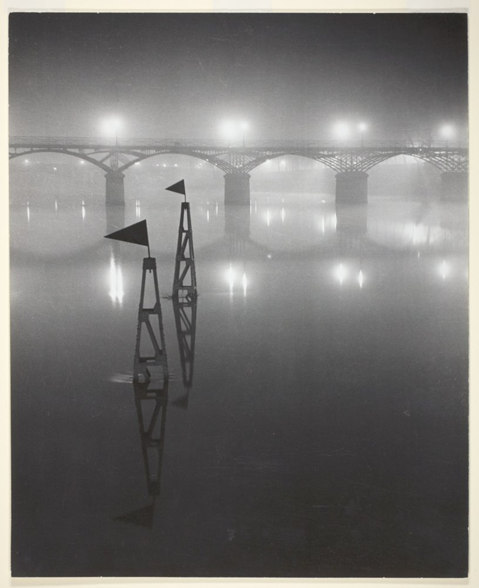

Pont des Arts in Fog and Mist
Brassaï · 1934 · Gelatin silver print · 49.6 × 40.2 cm (image/paper/mount) · Art Institute of Chicago
In copyright. Look and learn: shown for study, not for download.
Gyula Halász took his working name from Brassó, the Transylvanian town where he was born in 1899; Brassaï means from Brassó. He moved to Paris in 1924 and stayed for the rest of his life. He later wrote that he took up the camera for the streets and gardens in rain and fog, and for Paris by night. On the back of this mount the title is written in English in black ink.